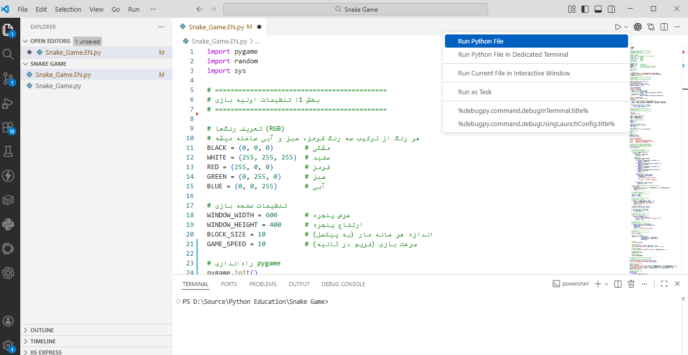
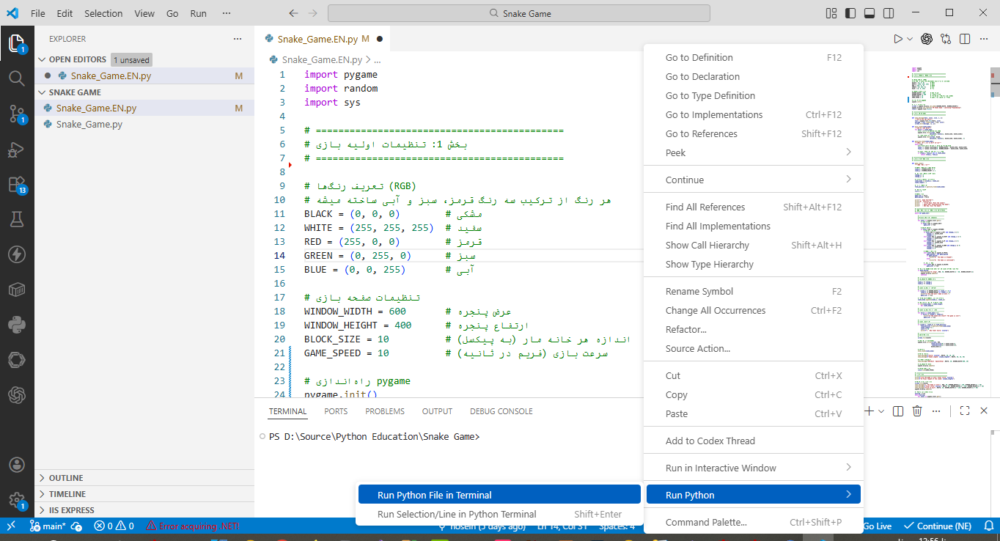

سایر بخشهای این مقاله:
بازی بساز برنامه نویسی با پایتون یاد بگیر - بخش اول
تا اینجا، هسته اصلی منطق بازی را مرحله به مرحله مرور کردیم. از مقداردهی اولیه متغیرها و پیکربندی وضعیت شروع بازی گرفته تا مدیریت رویدادهای ورودی کاربر، بهروزرسانی موقعیت مار، بررسی برخورد با دیوارها و بدن خود مار، و در نهایت مکانیزم خوردن طعمه و افزایش امتیاز. تمام این اجزا در کنار یکدیگر، چرخه حیات بازی را تشکیل میدهند و اکنون ساختار کلی آن به خوبی شکل گرفته است.
اما یک بازی ویدئویی صرفاً با منطق محض کامل نمیشود؛ آنچه روح بصری به کدهای ما میبخشد و تجربه کاربری را شکل میدهد، بخش نمایش و ترسیم عناصر بر روی صفحه است. در ادامه این مسیر، به سراغ بخش پایانی کد میرویم که وظیفه آن تبدیل دادههای انتزاعی بازی به تصاویر ملموس و قابل مشاهده برای بازیکن است. این بخش شامل ترسیم صفحه بازی، رنگآمیزی پسزمینه، نمایش مار و طعمه بر روی بوم گرافیکی، و همچنین بهروزرسانی مداوم صفحه نمایش با استفاده از توابع pygame است.
علاوه بر این، با برخی از توابع کمکی که در طول کد مورد استفاده قرار گرفتهاند اما هنوز به جزئیات آنها نپرداختهایم، آشنا خواهیم شد. توابعی مانند generate_food برای تولید موقعیت تصادفی طعمه، و show_message برای نمایش متون مختلف بر روی صفحه بازی. این توابع کمکی، نمونههای خوبی از اصل ماژولارسازی و تفکیک مسئولیتها در برنامهنویسی هستند و بررسی آنها به درک عمیقتر ساختار یک پروژه واقعی کمک خواهد کرد.
رسم صحنه
رسم صحنه بازی مرحلهای حیاتی است. این بخش شامل ترسیم پسزمینه، مار، طعمه، و همچنین نمایش امتیازات و اطلاعات مرتبط با بازی بر روی صفحه نمایش است.
# ----------------------------------
# رسم صحنه بازی
# ----------------------------------
screen.fill(BLACK)
# رسم غذا (دایره قرمز)
pygame.draw.circle(screen, RED,
[food_position[0] + BLOCK_SIZE//2,
food_position[1] + BLOCK_SIZE//2],
BLOCK_SIZE//2)
# رسم مار
draw_snake(snake_body)
# نمایش امتیاز
show_message(f"Score: {score}", WHITE, 30, 10, 10)
show_message(f"Snake Length: {snake_length}", WHITE, 30, 10, 40)
# راهنمای کنترلها
show_message("ESC=Exit Space=Stop", WHITE, 20, WINDOW_WIDTH-200, 10)
# بهروزرسانی صفحه
pygame.display.update()
# کنترل سرعت بازی
clock.tick(GAME_SPEED)نخستین اقدام، پاکسازی کامل صفحه با فراخوانی screen.fill(BLACK) است. این دستور تمام سطح نمایش را با رنگ مشکی (که پیشتر به عنوان یک ثابت تعریف کرده بودیم) رنگآمیزی میکند. این کار مانند پاک کردن تخته سیاه پیش از رسم یک نقاشی جدید است و تضمین میکند که هیچ اثری از فریم قبلی بازی بر روی صفحه باقی نماند. بدون این مرحله، تصاویر قبلی روی هم انباشته شده و صفحه را آشفته میسازند.
در ادامه، نوبت به رسم طعمه یا همان غذای مار میرسد. تابع pygame.draw.circle یک دایره قرمز رنگ بر روی صفحه ترسیم میکند. مختصات مرکز دایره با جمع موقعیت طعمه و نصف اندازه هر خانه (BLOCK_SIZE//2) محاسبه میشود تا دایره دقیقاً در مرکز خانه مورد نظر قرار گیرد. شعاع دایره نیز برابر با نصف اندازه خانه در نظر گرفته شده است.
سپس، تابع draw_snake که یک تابع کمکی تعریفشده توسط خودمان است، وظیفه رسم بدن مار را بر عهده دارد. این تابع با دریافت لیست snake_body، تکتک قطعات بدن مار را بر روی صفحه میکشد. تفکیک این بخش به یک تابع مجزا، نمونه خوبی از اصل تقسیم مسئولیتهاست.
بخش مهم دیگر، نمایش اطلاعات بازی برای بازیکن است. با استفاده از تابع کمکی show_message، امتیاز فعلی و طول مار در گوشه بالای صفحه نمایش داده میشوند. همچنین یک راهنمای مختصر برای کلیدهای کنترلی در گوشه دیگر صفحه قرار میگیرد.
پس از رسم تمام عناصر، تابع ()pygame.display.update فراخوانی میشود تا تغییرات اعمالشده در حافظه، بر روی صفحه نمایش منعکس گردد. در نهایت، clock.tick(GAME_SPEED) سرعت اجرای حلقه بازی را کنترل میکند. این تابع با ایجاد مکثهای حسابشده، نرخ فریم بازی را ثابت نگه میدارد.
و اما پایان بازی
در انتهای بازی، صرفنظر از آنکه چه دلیلی موجب اتمام آن شده باشد، برنامه به مرحله نمایش نتایج و جمعبندی وارد میشود. این بخش، حسن ختام تعامل کاربر با بازی است.
# ==========================================
# پایان بازی
# ==========================================
print(f"\n🏁 The game is over! Final score: {score}")
print(f"📏 Final length of the snake: {snake_length}")
# نمایش پیام پایان بازی
screen.fill(BLACK)
show_message("🎮 The Game is over!", RED, 50, WINDOW_WIDTH//2 - 150, WINDOW_HEIGHT//2 - 40)
show_message(f"Final score: {score}", WHITE, 40, WINDOW_WIDTH//2 - 120, WINDOW_HEIGHT//2 + 10)
show_message("Click to exit", WHITE, 30, WINDOW_WIDTH//2 - 120, WINDOW_HEIGHT//2 + 60)
pygame.display.update()
# انتظار برای کلیک کاربر
waiting = True
while waiting:
for event in pygame.event.get():
if event.type == pygame.QUIT or event.type == pygame.MOUSEBUTTONDOWN:
waiting = False
pygame.quit()
sys.exit()نخست، نتایج نهایی شامل امتیاز کسبشده و طول مار در کنسول با f-string چاپ میشود. سپس، صفحه بازی با رنگ مشکی پوشانده شده و پیامهای پایانی بر روی آن نقش میبندد. تابع show_message سه پیام را در مرکز صفحه نمایش میدهد: عنوان “پایان بازی” به رنگ قرمز، امتیاز نهایی، و راهنمایی برای خروج.
پس از بهروزرسانی صفحه، برنامه وارد یک حلقه انتظار میشود. این حلقه با متغیر waiting کنترل شده و تا زمانی که کاربر اقدامی انجام ندهد، برنامه در همین حالت باقی میماند. در این حلقه، رویدادهای ورودی بررسی میشوند: با کلیک ماوس (pygame.MOUSEBUTTONDOWN) یا بستن پنجره، متغیر waiting به False تغییر یافته و حلقه پایان میپذیرد. این مکث به بازیکن فرصت میدهد تا نتیجه را بررسی کند و سپس با کلیک، بازی را ترک کند. در نهایت، ()pygame.quit منابع تخصیص یافته به Pygame را آزاد و ()sys.exit برنامه را به طور کامل بسته و به سیستم عامل بازمیگرداند.
توابع کمکی
تبریک! ما تا به این نقطه از مسیر، موفق شدیم یک بازی کلاسیک و نوستالژیک را به طور کامل پیادهسازی کنیم. در طول این فرآیند جذاب، نه تنها گامبهگام با ساختار و منطق یک پروژه واقعی آشنا شدیم، بلکه مفاهیم بنیادین زبان پایتون و قابلیتهای متنوع آن را نیز به شکلی عملی تجربه کردیم. از متغیرها و انواع داده گرفته تا ساختارهای کنترلی، توابع، و کار با کتابخانههای خارجی، همگی در قالب این پروژه آموزشی به کار گرفته شدند.
اما سفر یادگیری هنوز به پایان نرسیده است. در ادامه، نگاهی عمیقتر به منطق توابع کمکی که نقش پشتیبان را در طول بازی ایفا میکردند، خواهیم انداخت. این توابع، قطعات کوچک اما حیاتی از پازل برنامه هستند که با هدف افزایش خوانایی، جلوگیری از تکرار کد و تفکیک مسئولیتها طراحی شدهاند.
# ============================================
# بخش 2: توابع کمکی
# ============================================
def show_message(text, color, size, x, y):
"""نمایش متن روی صفحه"""
font = pygame.font.Font(None, size)
message = font.render(text, True, color)
screen.blit(message, (x, y))تابع نمایش پیامها
نخستین تابع، show_message است که وظیفه نمایش هرگونه متن بر روی صفحه بازی را بر عهده دارد. این تابع چهار پارامتر ورودی دریافت میکند: متن مورد نظر، رنگ، اندازه فونت، و مختصات x و y محل نمایش. در بدنه تابع، ابتدا یک شیء فونت با اندازه مشخص (و با استفاده از فونت پیشفرض - به دلیل استفاده از None) ساخته میشود. سپس، تابع render متن را به یک سطح تصویری (Surface) تبدیل میکند. پارامتر دوم این متد (True) مشخص میکند که متن باید با لبههای صاف و بی دندانه رسم شود. در نهایت، دستور screen.blit این سطح تصویری را در مختصات تعیینشده بر روی صفحه اصلی بازی قرار میدهد.
در پایتون، به مقداری مانند
Noneیک ثابت یکتا یا Singleton گفته میشود.Noneتنها نمونه از نوع دادهNoneTypeدر پایتون است و در سراسر برنامه، صرفنظر از اینکه کجا استفاده شود، همواره به یک شیء واحد در حافظه اشاره میکند.
Noneبرای نمایش «عدم وجود مقدار»، «مقدار نامعلوم» یا «هیچ» به کار میرود. برای مثال، زمانی که یک تابع صراحتاً مقداری را باreturnبازنگرداند، پایتون به طور ضمنیNoneرا بازمیگرداند. همچنین، هنگام تعریف متغیرهایی که هنوز مقدار معتبری برای آنها وجود ندارد، میتوان ازNoneبه عنوان یک مقدار موقت استفاده کرد. از آنجا کهNoneیک شیء یکتاست، مقایسه آن با عملگرis(مانندvariable is None) بر مقایسه با==ارجحیت دارد. این ویژگی،Noneرا به ابزاری استاندارد و مطمئن برای مدیریت وضعیتهای خاص در برنامهنویسی پایتون تبدیل کرده است.
تابع ترسیم مار
تابع draw_snake یک نمونه عینی و بسیار مناسب برای درک چگونگی تعریف توابع در پایتون است. تعریف تابع با کلمه کلیدی def آغاز میشود. پس از آن، نام تابع که باید توصیفکننده عملکرد آن باشد (در اینجا draw_snake) و سپس یک جفت پرانتز قرار میگیرد. درون این پرانتزها، پارامتر یا پارامترهایی که تابع برای انجام کار خود به آنها نیاز دارد، مشخص میشوند. این تابع یک پارامتر ورودی به نام snake_body دارد که لیستی از مختصات تمام قطعات بدن مار است. خط تعریف تابع با یک دونقطه : پایان میپذیرد.
def draw_snake(snake_body):
"""رسم مار روی صفحه"""
for block in snake_body:
# هر بخش مار یک مستطیل سبز رنگه
pygame.draw.rect(screen, GREEN,
[block[0], block[1], BLOCK_SIZE, BLOCK_SIZE])
# حاشیه تیره برای زیبایی
pygame.draw.rect(screen, BLACK,
[block[0], block[1], BLOCK_SIZE, BLOCK_SIZE], 2)بدنه تابع، یعنی دستوراتی که باید هنگام فراخوانی اجرا شوند، باید با یک تورفتگی (Indentation) مشخص نوشته شوند. این تورفتگی در پایتون اجباری است و محدوده کد متعلق به تابع را تعیین میکند. نخستین خط بدنه، یک Docstring یا رشته مستندسازی است که بین سه علامت نقل قول دوتایی قرار گرفته و هدف تابع را توضیح میدهد.
درون تابع، یک حلقه for بر روی تکتک اعضای snake_body حرکت میکند. در هر دور، متغیر block یک لیست کوچک دو عضوی شامل مختصات x و y یکی از قطعات مار است. سپس با استفاده از تابع pygame.draw.rect، یک مستطیل سبز رنگ برای بدنه مار (بدون آرگومان ضخامت) و یک مستطیل مشکی توخالی به عنوان حاشیه مشکی با ضخامت ۲ پیکسل به دور همان مستطیل برای زیبایی بصری رسم میشود. آرگومانهای این تابع شامل سطحی که مار در آن نمایش داده میشود (screen)، رنگ، و لیستی از مختصات و ابعاد به صورت [x, y, width, height]، و ضخامت خط است.
نکته قابل توجه این است که این تابع مقدار خاصی را با return باز نمیگرداند. در پایتون، چنین توابعی به طور ضمنی مقدار None را برمیگردانند، زیرا هدف آنها صرفاً انجام یک عملیات جانبی (رسم بر روی صفحه) است، نه محاسبه و تولید یک مقدار جدید. این تفکیک میان توابع محاسباتی و توابع عملیاتی، از اصول طراحی خوب نرمافزار محسوب میشود و به خوانایی و سازماندهی کد کمک شایانی میکند.
مقدار بازگشتی، خروجی یک تابع است که با کلمه کلیدی
returnبه فراخواننده ارسال میشود. اهمیت آن در امکان استفاده مجدد از نتایج محاسبات و انتقال داده میان بخشهای مختلف برنامه است. بدون مقدار بازگشتی، توابع صرفاً عملیات جانبی انجام میدهند و نمیتوان از نتایج آنها در ادامه کد بهره برد.به عنوان مثال تابع
()lenیک تابع پرکاربرد با مقدار بازگشتی است. این تابع طول یک ساختار دادهای (مانند لیست، رشته یا تاپل) را به عنوان یک عدد صحیح بازمیگرداند.
numbers = [1, 2, 3, 4, 5]
length = len(numbers) # مقدار 5 بازگردانده میشود
text = "Hello"
length = len(text) # مقدار 5 بازگردانده میشودتابع تولید غذای مار ()generate_food
این تابع یکی دیگر از توابع کمکی مهم در پروژه بازی Snake است که مانند بسیاری از توابع استاندارد پایتون، مقداری را به فراخواننده خود بازمیگرداند. این تابع نمونهای عالی از توابع محاسباتی است که هدف آن تولید یک نتیجه جدید و تحویل آن به بخش دیگر برنامه است.
تعریف تابع با کلمه کلیدی def و نام generate_food آغاز میشود. این تابع یک پارامتر ورودی به نام snake_body دریافت میکند که همان لیست حاوی مختصات تمام قطعات بدن مار است. ارسال این پارامتر به تابع ضروری است، زیرا تابع باید اطمینان حاصل کند که طعمه جدید روی بدن مار ظاهر نشود و تجربه بازی را خراب نکند.
def generate_food(snake_body):
"""تولید غذای جدید در مکان تصادفی"""
while True:
# محاسبه مختصات تصادفی با توجه به اندازه شبکه
food_x = random.randrange(0, WINDOW_WIDTH - BLOCK_SIZE, BLOCK_SIZE)
food_y = random.randrange(0, WINDOW_HEIGHT - BLOCK_SIZE, BLOCK_SIZE)
# بررسی اینکه غذا روی مار ایجاد نشه
if [food_x, food_y] not in snake_body:
return [food_x, food_y]در بدنه تابع، یک حلقه while True قرار دارد. این ساختار یک حلقه بینهایت است که تا زمانی که شرط خروج از آن با return فراهم نشود، به تکرار ادامه میدهد. استفاده از این الگو در اینجا هوشمندانه است، زیرا ممکن است مختصات تصادفی تولید شده در نخستین تلاش روی بدن مار بیفتد و نیاز باشد مجدداً تلاش کنیم.
درون حلقه، دو متغیر food_x و food_y با استفاده از تابع random.randrange از ماژول random مقداردهی میشوند. این تابع یک عدد تصادفی از یک بازه مشخص با گامهای معین تولید میکند. پارامترهای آن به ترتیب عبارتند از: نقطه شروع (۰)، نقطه پایان (عرض یا ارتفاع پنجره منهای اندازه یک خانه)، و گام حرکت( BLOCK_SIZE). استفاده از BLOCK_SIZE به عنوان گام تضمین میکند که مختصات طعمه همواره مضربی از اندازه خانهها بوده و طعمه دقیقاً در مرکز یکی از خانههای شبکه بازی قرار گیرد.
پس از تولید مختصات تصادفی، یک شرط if بررسی میکند که آیا مختصات جدید درون لیست snake_body وجود دارد یا خیر(not in). عملگر not in یکی از عملگرهای عضویت در پایتون است که بررسی میکند یک آیتم درون یک ساختار دادهای وجود دارد یا نه. اگر این شرط برقرار باشد، یعنی مکان تولید شده آزاد است و تابع با دستور return یک لیست دو عضوی حاوی [food_x, food_y] را به فراخواننده بازمیگرداند. این تابع نمونه کاملی از ترکیب چندین مفهوم پایهای پایتون است: حلقههای شرطی بینهایت، تولید اعداد تصادفی با گام مشخص، عملگرهای عضویت، ساختارهای شرطی و بازگرداندن مقادیر.
به پایان آمد این دفتر
در این مقاله چند قسمتی، رویکردی متفاوت برای آموزش برنامهنویسی در پیش گرفته شد. به جای شروع با تعاریف خشک و انتزاعی، خواننده ناآشنا با دنیای کدنویسی، مستقیماً با یک مسئله جذاب و ملموس یعنی ساخت بازی کلاسیک Snake روبرو شد. این شیوه آموزش پروژهمحور، یادگیری را از یک فرآیند منفعل به تجربهای پویا و لذتبخش تبدیل میکند.
در طول این مسیر گامبهگام، خواننده با مهمترین اصول و زیربنای زبان پایتون آشنا شد. این مفاهیم شامل متغیرها و انواع دادههای پایه مانند اعداد صحیح، اعشاری، رشتهها و مقادیر منطقی بود. ساختارهای کنترلی نظیر شرط if و حلقههای while و for برای مدیریت جریان اجرای برنامه آموزش داده شد. مفهوم عملگرها، اعم از ریاضی، مقایسهای و منطقی، در قالب محاسبات واقعی بازی تشریح گردید.
ساختارهای دادهای نظیر لیست، تاپل و دیکشنری به عنوان ابزارهای سازماندهی اطلاعات معرفی شدند. اصل مهم توابع و زیربرنامهها برای ماژولارسازی کد و جلوگیری از تکرار مورد بررسی قرار گرفت. همچنین، مفاهیمی مانند قلمرو متغیرها، ثابتها و مقادیر شمارشی، و کار با کتابخانههای خارجی مانند Pygame به صورت عملی آموزش داده شد. بدین ترتیب، خواننده نه تنها یک بازی کامل ساخت، بلکه پایههای تفکر محاسباتی و مهارت حل مسئله را نیز فراگرفت.
اگر علاقهمند به ادامه مسیر باشید میتوانید با افزودن قابلیتهای جدید به همین پروژه، دانش خود را به چالش بکشید و ارتقا دهید. برای نمونه، پیادهسازی یک سیستم ذخیره و بازیابی بالاترین امتیاز با استفاده از فایلها، مفهوم ورودی و خروجی پایدار را آموزش میدهد. افزودن صداها و افکتهای صوتی هنگام خوردن طعمه یا پایان بازی، آشنایی با ماژول pygame.mixer را به همراه دارد. ایجاد یک منوی اصلی با گزینههای شروع، تنظیمات و خروج، درک عمیقتری از مدیریت حالتهای مختلف بازی ارائه میکند.
همچنین، بازنویسی پروژه با رویکرد شیءگرایی، جایی که مار، غذا و صفحه بازی هر یک به کلاسهای مجزا تبدیل میشوند، گامی بلند به سوی درک برنامهنویسی شیءگرا خواهد بود. افزودن موانع ثابت یا متحرک، افزایش تدریجی سرعت بازی با بالارفتن امتیاز، یا حتی پیادهسازی حالت دو نفره روی یک صفحه کلید، ایدههای جذابی برای گسترش این پروژه هستند.
فراتر از این بازی، دنیای پایتون سرشار از کتابخانهها و فریمورکهای قدرتمند برای حوزههای متنوعی چون توسعه وب (با Django)، تحلیل داده (با Pandas)، هوش مصنوعی (با TensorFlow) و اتوماسیون است. آنچه در این مقاله آموختید، نه فقط یک بازی، بلکه الفبای تفکر محاسباتی بود که میتوانید بر پایه آن، هر مسیر دلخواهی را در دنیای برنامهنویسی بپیمایید. به یاد داشته باشید که هر برنامهنویس حرفهای، روزی از همین نقطه شروع کرده است. مهمترین توصیه برای ادامه مسیر، استمرار در تمرین، کنجکاوی در مواجهه با مسائل جدید و لذت بردن از فرآیند ساختن است.
متن کامل برنامه و نحوه اجرای آن
برای اجرای این برنامه و مشاهده نتیجه کار، روشهای مختلفی در اختیار شما قرار دارد که هر یک مزایا و کاربردهای خاص خود را دارند. انتخاب روش مناسب به سطح تجربه شما، هدفتان از اجرای برنامه و میزان کنترلی که بر محیط توسعه نیاز دارید بستگی دارد. در این بخش، به دو روش متداول و پرکاربرد میپردازیم که اولی سادهترین و سریعترین راه برای به اجرا درآوردن کد است و دومی، بهترین و حرفهایترین شیوه برای توسعه و مدیریت پروژههای پایتون محسوب میشود.
متن کامل برنامه را می توانید از آدرسهای زیر دریافت کنید:
https://sourcesara.com/compiler/editor/python/shared/fgilxmxrryi7wj9t https://liveweave.com/py/XhmByj
روش نخست که برای مبتدیان و آزمونهای سریع بسیار مناسب است، اجرای مستقیم فایل پایتون از طریق خط فرمان یا ترمینال سیستم عامل است. در این روش، کافی است یک ویرایشگر متن ساده (مانند Notepad در ویندوز یا TextEdit در مک) را باز کرده، کد برنامه را در آن ذخیره نمایید و سپس با باز کردن Command Prompt یا Terminal، دستور python snake_game.py را اجرا کنید. این روش اگرچه ساده است، اما امکاناتی مانند تکمیل خودکار کد، اشکالزدایی پیشرفته و مدیریت بستهها را در اختیار شما قرار نمیدهد.
لازم است پیش از اجرای برنامه، اطمینان حاصل کنید که Python و کتابخانه Pygame بر روی سیستم شما نصب شده باشند.
برای نصب سریع پایتون، به وبسایت رسمی python.org مراجعه کرده و آخرین نسخه مخصوص سیستم عامل خود را دانلود کنید. هنگام نصب در ویندوز، حتماً گزینه “Add Python to PATH” را فعال نمایید تا از طریق خط فرمان قابل دسترسی باشد. پس از اتمام نصب، با تایپ
python --versionدر ترمینال، از صحت نصب اطمینان حاصل کنید.
برای نصب بسته Pygame نیز می توانید دستور زیر را در ترمینال اجرا نمائید:
pip install pygameروش دوم که توسط برنامهنویسان حرفهای توصیه میشود، استفاده از یک محیط توسعه یکپارچه یا IDE است. این ابزارها با فراهم کردن امکاناتی نظیر ویرایشگر هوشمند کد، دیباگر گرافیکی، مدیریت خودکار محیطهای مجازی و نصب آسان کتابخانهها، فرآیند توسعه را بسیار روانتر و کارآمدتر میسازند.
انواع متنوعی از محیطهای توسعه نرمافزار در دسترس برنامهنویسان قرار دارد که هر یک ویژگیها و قابلیتهای منحصربهفردی را ارائه میدهند. از جمله محبوبترین این محیطها میتوان به Visual Studio Code (ویرایشگر قدرتمند و کمحجم مایکروسافت با پشتیبانی از افزونههای متعدد)، PyCharm (محیط تخصصی پایتون از شرکت JetBrains با دو نسخه رایگان Community و حرفهای Professional)، Jupyter Notebook (محبوب در میان دانشمندان داده و پژوهشگران برای اجرای تعاملی کد)، Sublime Text (ویرایشگر سریع و سبک با قابلیت شخصیسازی بالا)، IDLE (محیط ساده و پیشفرض نصب شده همراه پایتون)، و Spyder (متخصص در تحلیل داده و محاسبات علمی) اشاره کرد.
هر یک از این ابزارها بسته به نیاز و سطح تجربه کاربر، مزایای خاص خود را دارند. برای نمونه، PyCharm با ارائه تکمیل خودکار هوشمند، اشکالزدایی یکپارچه و مدیریت پروژه، گزینهای عالی برای پروژههای بزرگ است. Jupyter برای تحلیل داده و مصورسازی بسیار مناسب است. اما در این میان، Visual Studio Code به دلیل رایگان بودن، سرعت بالا، مصرف کم منابع سیستم، پشتیبانی از زبانهای گوناگون و فروشگاهی غنی از افزونهها، به یکی از پرطرفدارترین انتخابها در میان توسعهدهندگان تبدیل شده است.
حال ببینیم برای اجرای برنامه بازی Snake در محیط Visual Studio Code، چه مراحلی را باید طی کرد:
گام اول: باز کردن پوشه پروژه
VS Code را اجرا کرده و از منوی File گزینه Open Folder را انتخاب کنید. پوشهای که فایل snake_game.py در آن ذخیره شده است را انتخاب کنید. با این کار، پروژه شما در نوار کناری File Explorer نمایش داده میشود.
گام دوم: انتخاب مفسر پایتون
پس از نصب افزونه، با کلیدهای Ctrl+Shift+P پنجره فرمان را باز کرده و عبارت “Python: Select Interpreter” را جستجو کنید. از لیست نمایش داده شده، نسخه پایتون نصب شده بر روی سیستم خود را انتخاب کنید.

اجرای برنامه در visual studio code
گام سوم: باز کردن فایل و اجرای برنامه
روی فایل snake_game.py در File Explorer دوبار کلیک کنید تا در ویرایشگر باز شود. اکنون برای اجرا، یکی از سه روش زیر را به کار ببرید: کلیک بر روی آیکون مثلث ▶️ در گوشه بالای سمت راست ویرایشگر، فشردن کلیدهای Ctrl+F5، یا کلیک راست درون ویرایشگر و انتخاب Run Python File in Terminal. با این کار، پنجره بازی Snake باز شده و میتوانید از اجرای آن لذت ببرید.

اجرای برنامه با کلیک راست درون ویرایشگر و انتخاب Run Python File in Terminal
در این مقاله چند قسمتی، سفری جذاب و پروژهمحور را در دنیای برنامهنویسی پایتون پشت سر گذاشتیم. از نخستین گامها با متغیرها و انواع داده گرفته تا پیچیدگیهای مدیریت رویدادها، حلقههای تکرار، توابع و ساختارهای دادهای، همه و همه در قالب ساختن یک بازی واقعی و ملموس آموزش داده شد. اما چند توصیه پایانی:
نخست: به کد زدن ادامه دهید و تمرین را رها نکنید.
برنامهنویسی مانند نواختن یک ساز موسیقی یا یادگیری یک زبان خارجی است؛ مهارتی که صرفاً با مطالعه تئوری به دست نمیآید و نیازمند تمرین مداوم و عملی است. سعی کنید هر روز حتی برای مدت کوتاهی کد بزنید. پروژه بازی Snake خود را دستمایه آزمایشات جدید قرار دهید: ویژگیهای جدیدی به آن اضافه کنید، ظاهر آن را تغییر دهید، یا حتی باگهای عمدی ایجاد کرده و سپس آنها را رفع نمایید. هر اشتباه، یک فرصت ارزشمند برای یادگیری عمیقتر است. بهیاد داشته باشید که حتی برنامهنویسان حرفهای هم همواره در حال جستجو، آزمون و خطا و مرور مستندات هستند.
دوم: پروژههای کوچک و شخصی تعریف کنید.
پس از تسلط نسبی بر مفاهیم پایه، هیچ چیز به اندازه ساختن پروژههای شخصی، اعتماد به نفس و مهارت شما را افزایش نمیدهد. از پروژههای ساده مانند ماشین حساب، لیست کارهای روزانه (To-Do List)، یا یک وبسایت ساده شروع کنید و به تدریج سراغ ایدههای پیچیدهتر بروید. این پروژهها میتوانند پاسخگوی نیازهای واقعی خودتان باشند و انگیزه شما را برای ادامه یادگیری دوچندان کنند.
سوم: خواندن کد دیگران را فراموش نکنید.
مطالعه کدهای متنباز موجود در پلتفرمهایی مانند GitHub، یکی از بهترین راهها برای آشنایی با سبکهای مختلف کدنویسی، الگوهای طراحی و تکنیکهای پیشرفته است. سعی کنید کدهایی را که میخوانید، درک کرده و حتی آنها را بازنویسی کنید. این تمرین، دید شما را نسبت به روشهای حل مسائل گوناگون وسعت میبخشد.
چهارم: از پرسیدن سوال و کمک گرفتن نهراسید.
جامعه برنامهنویسی پایتون یکی از بزرگترین و حمایتکنندهترین جوامع فنی در جهان است. وبسایتهایی مانند Stack Overflow، انجمنهای Reddit و گروههای تلگرامی و Discord محلی، پر از افرادی هستند که روزی جای شما بودهاند و اکنون آماده کمک به تازهواردان هستند. پیش از پرسیدن سوال، حتماً جستجو کنید، اما اگر پاسخ را نیافتید، با توضیح واضح مسئله، آنچه آزمودهاید و پیام خطای دقیق، سوالتان را مطرح نمایید.
پنجم: مبانی علوم کامپیوتر را بیاموزید.
پس از کسب تجربه عملی، آشنایی با مبانی نظری مانند ساختمان دادهها و الگوریتمها، اصول طراحی نرمافزار، پایگاههای داده و شبکههای کامپیوتری، دید شما را عمیقتر کرده و شما را از یک کدنویس به یک مهندس نرمافزار تبدیل میکند. این دانش، توانایی شما در تحلیل مسائل پیچیده و طراحی راهحلهای بهینه را به طور چشمگیری افزایش میدهد.
ششم: پس از تسلط نسبی بر کدنویسی، از هوش مصنوعی برای تسریع و افزایش کارایی بهره ببرید.
پس از آنکه مفاهیم پایه را به خوبی فراگرفتید و توانستید به طور مستقل کد بزنید و مسائل را حل کنید، زمان آنست که با ابزارهای نوین، بهرهوری خود را به سطح بالاتری ارتقا دهید. امروزه، دستیارهای برنامهنویسی مبتنی بر هوش مصنوعی مانند GitHub Copilot، ChatGPT، Google Gemini و Claude به همکارانی قدرتمند برای توسعهدهندگان در تمام سطوح تبدیل شدهاند.
این ابزارها میتوانند در زمینههای متعددی به شما کمک کنند: تکمیل خودکار بلوکهای کد بر اساس زمینه، پیشنهاد راهحلهای جایگزین برای یک مسئله، توضیح قطعات کد پیچیده یا ناآشنا، یافتن و رفع باگها، و حتی تولید خودکار مستندات و تستهای واحد. برای نمونه، میتوانید از یک دستیار هوش مصنوعی بخواهید تابعی را که نوشتهاید تحلیل کرده و نقاط ضعف احتمالی آن را گوشزد کند، یا راهکاری برای بهینهسازی یک حلقه تکرار کند ارائه دهد.
نکته کلیدی در استفاده مؤثر از این ابزارها، رعایت ترتیب یادگیری است. ابتدا باید خودتان بیاموزید که چگونه مسائل را تجزیه و تحلیل کرده و راهحل طراحی کنید. در غیر این صورت، وابستگی زودهنگام به هوش مصنوعی میتواند مانع پرورش مهارت تفکر محاسباتی و توانایی حل مسئله در شما شود. با هوش مصنوعی همچون یک همکار و مربی رفتار کنید، نه یک عصای جادویی. کدهای پیشنهادی آن را نقد و بررسی کنید، دلیل عملکردشان را بپرسید و هرگز چیزی را که نمیفهمید، کورکورانه در پروژه خود قرار ندهید. استفاده هوشمندانه از این فناوری، شما را به برنامهنویسی سریعتر، دقیقتر و خلاقتر تبدیل خواهد کرد.
هفتم: کسب مهارت در Vibe Coding را در برنامه یادگیری خود بگنجانید.
اصطلاح Vibe Coding که به تازگی در میان توسعهدهندگان رواج یافته، به سبکی از برنامهنویسی اشاره دارد که در آن، برنامهنویس به جای درگیری با جزئیات نحوی و پیادهسازیهای سطح پایین، بر روی «حس و حال» کلی پروژه، ایدهپردازی و بیان مقصود به زبان طبیعی تمرکز میکند و جزئیات فنی را به دستیارهای هوش مصنوعی میسپارد. در این رویکرد، شما به جای آنکه ساعتها صرف نوشتن تکتک خطوط کد کنید، با زبانی ساده و توصیفی به هوش مصنوعی میگویید چه میخواهید، بازخورد میگیرید، تغییرات را هدایت میکنید و نتیجه نهایی را شکل میدهید. این سبک، مرز میان «برنامهنویس» و «کارگردان خلاق» را محو میکند.
اهمیت Vibe Coding در دنیای امروز از آن روست که سرعت توسعه را به شدت افزایش میدهد و به شما امکان میدهد نمونههای اولیه (Prototype) را در کسری از زمان معمول بسازید و ایدههای خود را سریعتر به واقعیت تبدیل کنید. تصور کنید بتوانید تنها با توصیف یک ویژگی جدید برای بازی Snake، مانند «میخواهم یک مار دیگر به عنوان دشمن در صفحه حرکت کند و اگر با آن برخورد کردم بازی تمام شود»، کد مربوطه را در چند دقیقه تحویل بگیرید، آن را آزمایش کرده و اصلاحات بعدی را اعمال کنید.
اما مهارت در Vibe Coding صرفاً به معنای بلد بودن پرامپت نویسی (Prompt Engineering) نیست. این مهارت شامل چندین لایه است: نخست، توانایی تجزیه و تحلیل مسائل و شکستن آنها به اجزای کوچکتر که قابل توصیف برای هوش مصنوعی باشند. دوم، داشتن دید انتقادی برای ارزیابی کد تولید شده و تشخیص خطاهای منطقی، امنیتی یا کارایی. سوم، مهارت دیباگ و تست که بدون آن، نمیتوانید از صحت عملکرد کد تولید شده اطمینان حاصل کنید. و چهارم، توانایی خواندن و درک کد تولید شده توسط هوش مصنوعی، تا در صورت نیاز بتوانید آن را شخصاً تغییر دهید.
بنابراین، Vibe Coding نه یک میانبر برای فرار از یادگیری اصول، بلکه یک مهارت مکمل و پیشرفته است که بر روی شالوده دانش پایهای برنامهنویسی بنا میشود. برنامهنویسان موفق آینده، کسانی خواهند بود که تعادل مناسبی میان درک عمیق مفاهیم فنی و توانایی بهرهگیری هوشمندانه از دستیارهای هوش مصنوعی برقرار میکنند. تمرین این سبک را از پروژههای کوچک شخصی شروع کنید و به تدریج، آن را به بخشی از جعبه ابزار حرفهای خود تبدیل نمایید.
برای آشنایی بیشتر با این سبک از برنامه نویسی خواندن مقاله وایب کدینگ ( vibe coding ) - تجربه عملی برنامه نویسی برای آنانکه از کدنویسی چیزی نمی دانند را توصیه می کنم.
هشتم: صبور باشید و از مسیر لذت ببرید.
یادگیری برنامهنویسی یک ماراتن است، نه یک دو سرعت. لحظاتی از ناامیدی و سردرگمی برای همه پیش میآید، اما همین چالشها هستند که شیرینی موفقیت را بیشتر میکنند. هر خط کدی که مینویسید، شما را یک قدم به تسلط نزدیکتر میکند. به خودتان افتخار کنید که تا اینجا آمدهاید و با اشتیاق و کنجکاوی به راهتان ادامه دهید. دنیای فناوری همواره در حال تغییر است و مهمترین مهارت یک برنامهنویس، توانایی یادگیری مداوم و سازگاری با شرایط جدید است.